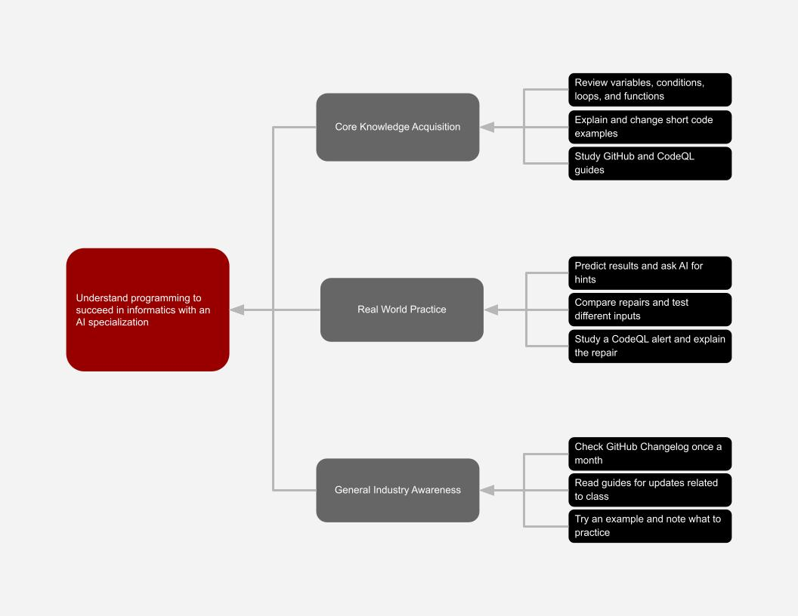

Programming begins with figuring out what the program should do. After that, the programmer writes the code and tests it. AI can write a bigger share of the code now. Even so, the programmer has to decide whether the finished program does the job it was meant to do. I picked AI coding agents and automatic security scanning because they support different parts of the job. One helps build the code, and the other checks it for certain problems.
GitHub's cloud agent guide says Copilot can read files in a project, change the code, and run tests. For example, a programmer might ask it to repair a search tool that stopped working and add tests for the repair. The agent could look for the files involved, make a change, and then run the tests. GitHub explains that a large language model helps the agent understand the request and choose which tools to use. That does not mean its answer is always right. GitHub's responsible use guide says the code may be wrong or unsafe, so the programmer still needs to explain the task clearly and go through each change before using it.
The way these agents work is still changing. In April 2026, GitHub added tools that let its cloud agent study a project and make a plan before touching the code. I think this could leave a programmer with more time to think about how a feature should work while the agent takes care of some repeated steps. The real time saved will depend on the task and how much of the agent's code has to be fixed. I would include the time spent reviewing and correcting its work because the first answer may not be the finished answer. For me, reading code, breaking a problem into smaller pieces, and writing useful tests will matter more as I use these agents. I should be able to explain why the code works before I decide to keep it.
Automatic security scanning checks code for certain risks while a project is being changed. GitHub's code scanning guide says a scan can find possible security problems and coding errors, then make alerts for a developer to read. The scan may run on a schedule or after someone pushes new code to the project. CodeQL is one tool that can do this. Its query guide explains that checks can look for a certain problem and follow how information moves through the code. These are written checks, not answers made by a generative AI model. The computer can repeat the supported checks and show the programmer where to look closer.
GitHub made its code scanning service generally available in September 2020, so this technique has already been used for several years. I think it becomes more useful when an AI agent can produce more code because the new code still has to be checked. Instead of repeating every supported check by hand, the programmer can spend that time looking into the alerts. The alert tells the programmer where to look, but it cannot make the final call. A scan with no alerts does not prove that the entire program is safe. I would judge the tool by the real problems it catches and the time it takes to review them, not by one promised speed. This means I need to learn secure coding, understand what caused a problem, and make sure a repair works instead of just making an alert disappear.
I have spent hours before trying to make a loop work the way I wanted, so I know AI will not help me much if I cannot understand the code it gives me. Since AI is my specialization in informatics, I want to get better at working through that kind of problem instead of only asking for another answer. Going back through variables, conditions, loops, and functions in my course materials gives me a place to build that understanding. For each concept, I can read one short example, explain it in my own words, and change a small part myself.
Short coding exercises fit this plan better than a big project. For each exercise, my notes will start with one question: what do I think this code will do? I will put the answer under my question, even when my guess was wrong, and circle the first part of the code I did not understand. If I cannot work it out from there, that is when I will ask AI about that section or ask for a hint. I will not stop at seeing the program run because I still need to compare the old code with the repair and explain what changed. My prompt can include my guess, the answer I got, and the parts I already checked.
I will run it again with the normal input, no input, and an unusual input to see whether the repair still works. For security scanning, I can begin with a real example from the CodeQL documentation and look at the code behind the alert. I want to know what made the code risky and why the suggested repair deals with that risk before I try the process in a supported practice setting. The GitHub responsible use guide and the CodeQL query guide can help me check my understanding. My goal is to explain the mistake and check the repair on my own, even if AI helped me earlier.
Once a month, I plan to look through the GitHub Changelog for updates about coding agents and security scanning. If one connects to a topic from class, I can read the official guide and try a small example when that is possible. My notes will cover what made sense, what is still confusing, and what I should practice next. That should give me a clear place to begin the next time I study.
